Explore by Farm Type
Find Your Farm's Sanitation Plan.
Every farm is different. VISK works across farm environments — from irrigation water to post-harvest wash. Select your crop or operation to see the relevant sanitation guide, with stage-by-stage protocols and recommended dilution rates.
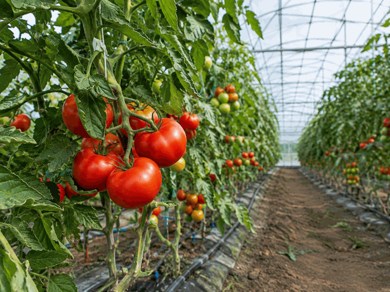
Tomato
Water line sanitation and foliar hygiene for open-field and polyhouse tomato. Nursery to harvest — full stage-wise protocol.
See how VISK works for tomato farms →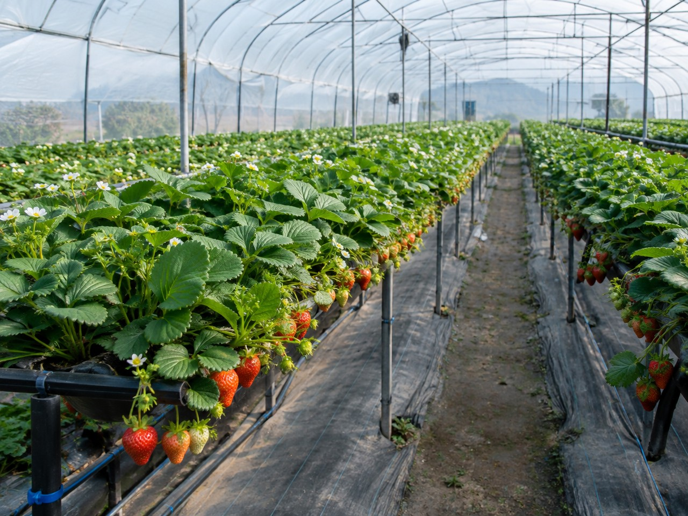
Strawberry
Pre-harvest and post-harvest wash for shelf life and food safety. Water treatment, harvest wash, export-grade hygiene.
See how VISK works for strawberry farms →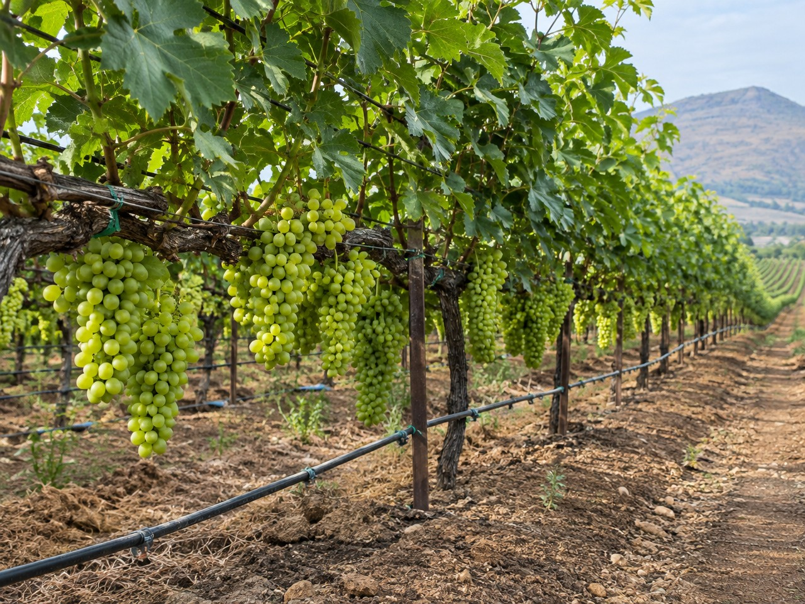
Grape
Vineyard irrigation sanitation and pre-export produce wash. Drip-line sanitation for Nashik-style grape operations.
See how VISK works for grape vineyards →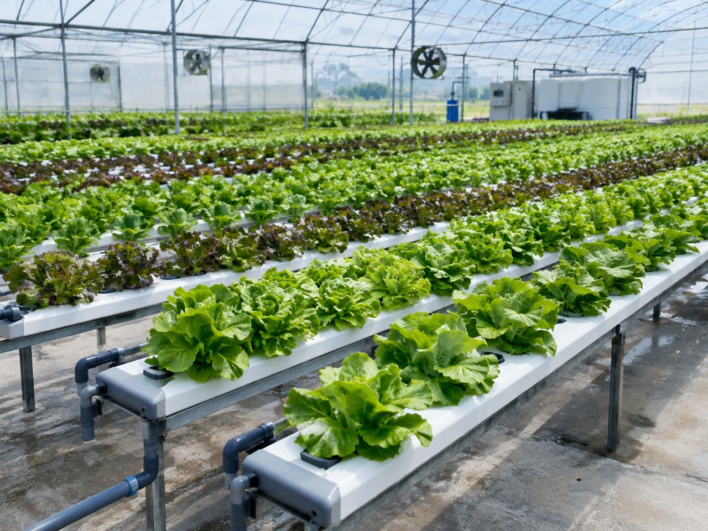
Leafy Greens
Hydroponic and soil-based leafy green water sanitation. NFT channel and aquaponic food safety protocols.
See how VISK works for leafy greens →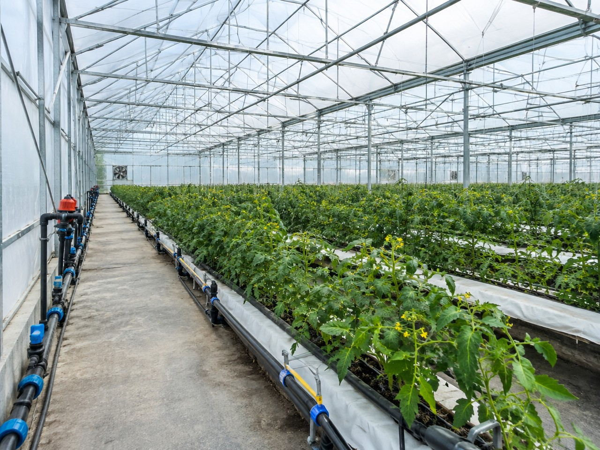
Greenhouse / Polyhouse
Surface, floor, and benchtop sanitation for protected cultivation. Complete SOP for air, water and surface hygiene.
See how VISK works for greenhouses →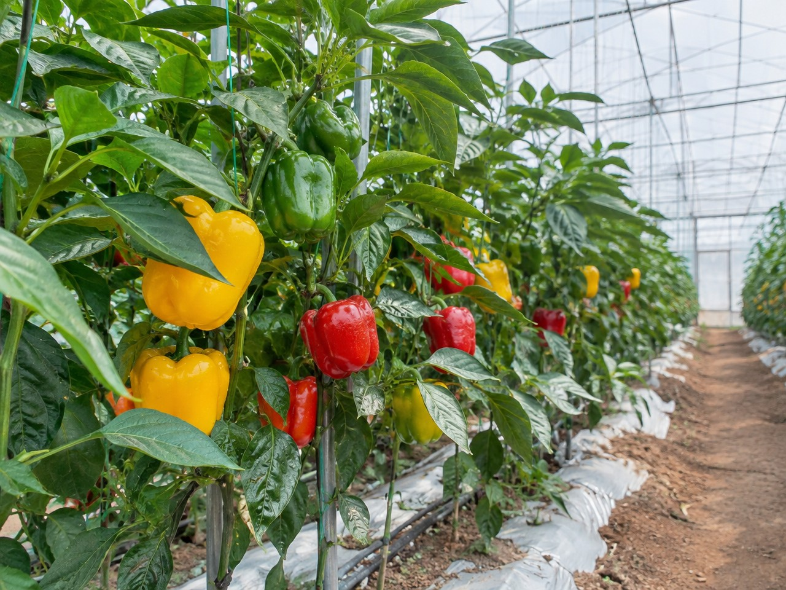
Capsicum
Protected cultivation water line and surface sanitation. Polyhouse sanitation, water treatment, and produce wash.
See how VISK works for capsicum farms →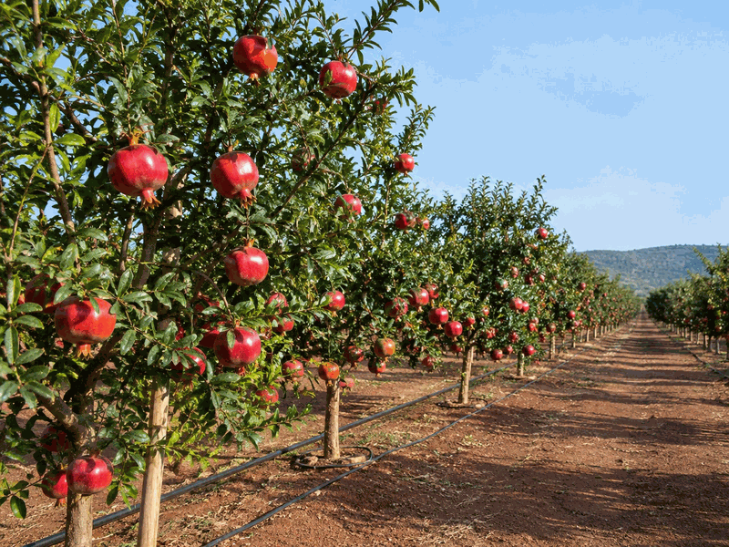
Pomegranate
Orchard irrigation sanitation and post-harvest produce wash. Irrigation hygiene for Maharashtra-style orchards.
See how VISK works for pomegranate orchards →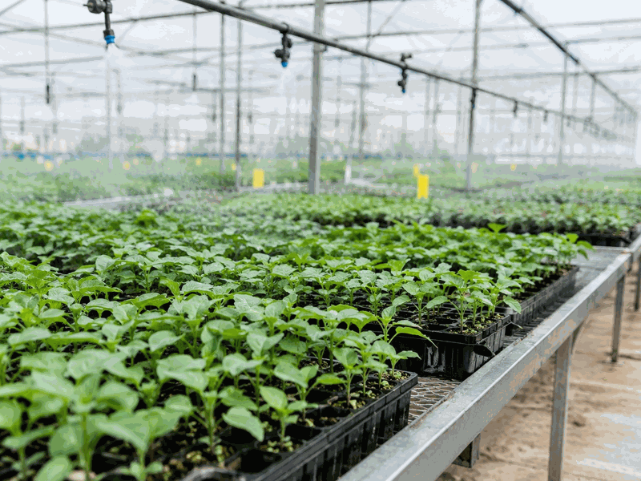
Nursery / Seedling
Seedling tray and propagation water sanitation. Tray sanitation and transplant hygiene protocols.
See how VISK works for nurseries →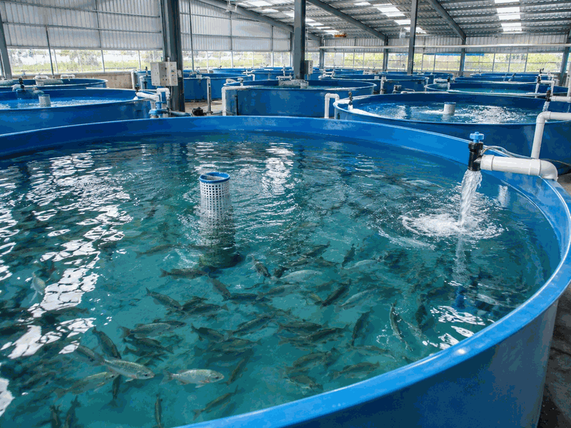
Fish
Pond and tank water sanitation for freshwater fish farming. Tank sanitation and water quality management.
See how VISK works for fish farms →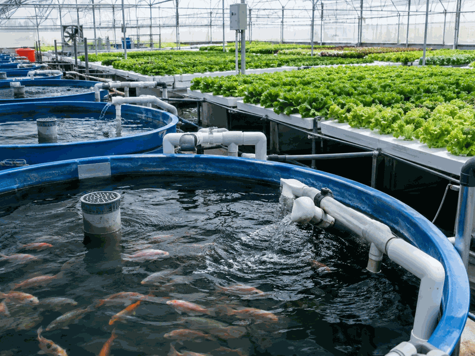
Aquaponic
Integrated fish-plant system water and surface hygiene. Fish-safe water treatment and produce hygiene protocols.
See how VISK works for aquaponic systems →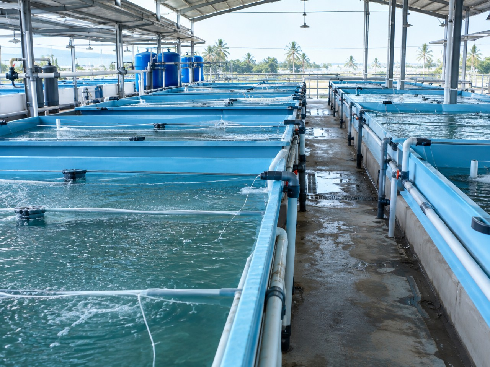
Shrimp
Hatchery and grow-out water sanitation for shrimp operations. Hatchery sanitation and water treatment.
See how VISK works for shrimp farms →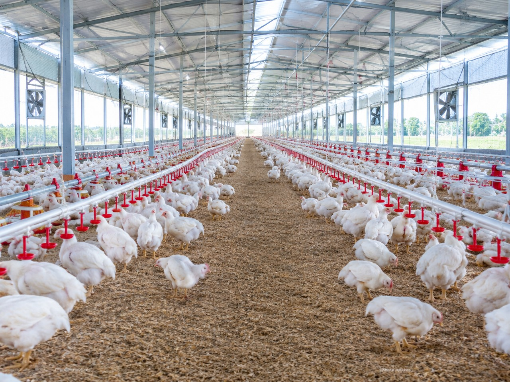
Poultry
Drinking water sanitation and house fogging for poultry biosecurity. Equipment and visitor protocols.
See how VISK works for poultry houses →Explore by Concern
Or Start With Your Biggest Problem.
Not sure which application fits? Start with what you're trying to solve. These guides cut across farm types — whether you're dealing with dirty water, shelf life issues, or biosecurity gaps, we'll show you how VISK addresses it.
Water & Irrigation
Biofilm, clogged drippers, and contaminated well water. Learn how to sanitize your entire water line from source to emitter.
Post-Harvest & Food Safety
Produce washing, pack-house surfaces, crates and cold storage. Extend shelf life and meet export-grade hygiene standards.
Biosecurity
Entry points, footbaths, vehicles, and visitor protocols. Prevent cross-contamination between zones and facilities.
Pathogen Guide
Understand the bacteria and fungi farms commonly face. Learn what thrives in your environment and how sanitation helps.
Equipment Sanitation
Pruning tools, harvest bins, trays, and sprayers. Keep your equipment free of microbial buildup between uses.
Hydroponics Roots Protection
Revive and rejuvenate roots in hydroponic systems. Address root zone pathogens and maintain healthy nutrient uptake.

Ready to Clean Up Your Farm?
Talk to our team. We'll build your farm's sanitation plan, free.